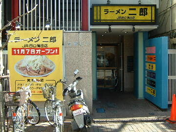
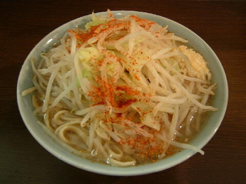

大田区 西蒲田 7-6-9
水
18：00〜23：00頃
土・日・祝 11：00〜14：30 18：00〜23：00頃

小 730円、小ブタ 830円、小ダブル 950円
大 830円、大ブタ 930円、大ダブル 1050円
店員は、鶴見店（鶴見店が移転して蒲田店となった）店主と助手。
無。
レンゲ有。ティッシュ無。名刺無。
BGMは、80.0。
トッピングは、ニンニク、ヤサイ、アブラ、カラメ、トウガラシ。
「ラーメン二郎 蒲田」でヤフー検索
「ラーメン二郎 蒲田」でヤフーリアルタイム検索
「ラーメン二郎 蒲田」でグーグル検索

小ブタ ニンニクトウガラシ
麺は、平打ちストレート。柔らかめ。量は少なめ。
ぶたは、小ぶりで薄切りの＠ぶたが４枚。
スープは、微乳化気味でさめた感じのもの。
ヤサイは、モヤシ7：キャベツ3の割合。茹で具合は普通。
ニンニクは、小粒に刻まれたもの。
ＰＣ店